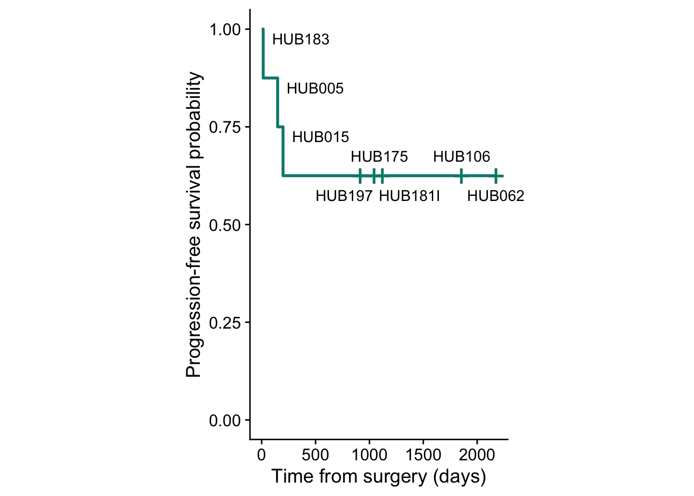

Pre-existing Radioresistant Subclones Determine Radioresistance in Rectal Cancer Organoids
2023-07-18
1 Radiation response and clinical data
# Libraries and sources
library(readxl)
library(tidyverse)
library(ggplot2)
library(ggfortify)
library(survival)
library(survminer)
library(survMisc)
library(cowplot)1.1 Progression-free survival
########
# Data #
########
# Loading survival data from time of surgery
surg_surv <- as.data.frame(read_excel("../cna_analysis/data/clinical_and_dr/data_survival_progression.xlsx",
sheet = "surg_surv"))
# Loading progression data from time of surgery
surg_prog <- as.data.frame(read_excel("../cna_analysis/data/clinical_and_dr/data_survival_progression.xlsx",
sheet = "surg_prog"))
###########
# Wrangle #
###########
# Ommiting rows with NAs
# surg_surv <- na.omit(surg_surv)
# surg_prog <- na.omit(surg_prog)
#######
# Run #
#######
## Survival from time of surgery ##
surg_surv_sum <- Surv(time = surg_surv$time, event = surg_surv$status == 2)
# Fit without strata (~1)
surg_surv_fit <- survfit(surg_surv_sum ~ 1)
# Median survival from time of surgery
surv_median(surg_surv_fit)[1,2]## [1] 1857## Progression from time of surgery ##
surg_prog_sum <- Surv(time = surg_prog$time, event = surg_prog$status == 2)
# Fit without strata (~1)
surg_prog_fit <- survfit(surg_prog_sum ~ 1)
# Median progression from time of surgery
surv_median(surg_prog_fit)[1,2]## [1] NA########
# Plot #
########
# Constructing a dataframe for annotating labels
anno_df_prog <- data.frame(label = surg_prog$organoid,
time = surg_prog$time)
# make temp df with survival/prob data
temp_df_prob_prog <- data.frame(time = surg_prog_fit$time,
prob = surg_prog_fit$surv
)
# join together
anno_df_prog <- left_join(anno_df_prog, temp_df_prob_prog)
# sort by time
anno_df_prog <- anno_df_prog[order(anno_df_prog$time),]
# Plotting progression free survival
prog_p <- ggsurvplot(surg_prog_fit, data = surg_prog, conf.int = F, palette = c("#00887d"),
ggtheme = theme_cowplot(),
legend = 'none',
censor.size = 8,
xlim = c(0,2200),
ylab = 'Progression-free survival probability',
xlab = 'Time from surgery (days)')
# adding labels
prog_p$plot <- prog_p$plot +
annotate("text",
x = anno_df_prog$time + c(350, 350, 350, -150,50,250,0,0),
y = anno_df_prog$prob + c(0.1,0.1,0.1, -0.05, 0.05, -0.05, 0.05,-0.05),
label = anno_df_prog$label) +
theme(aspect.ratio = 5/3) +
coord_cartesian(clip = 'off')
prog_p 